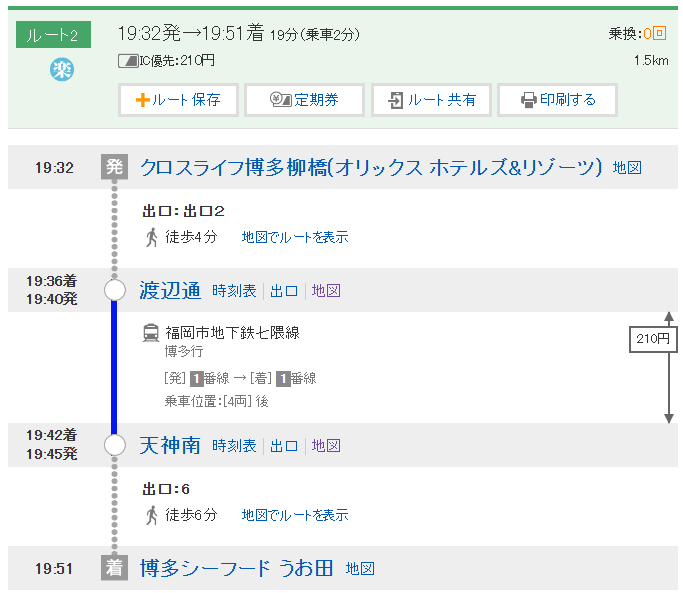
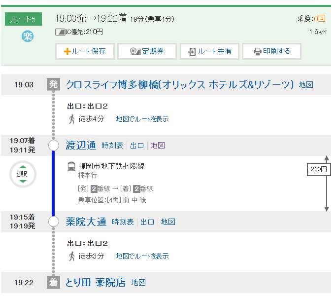
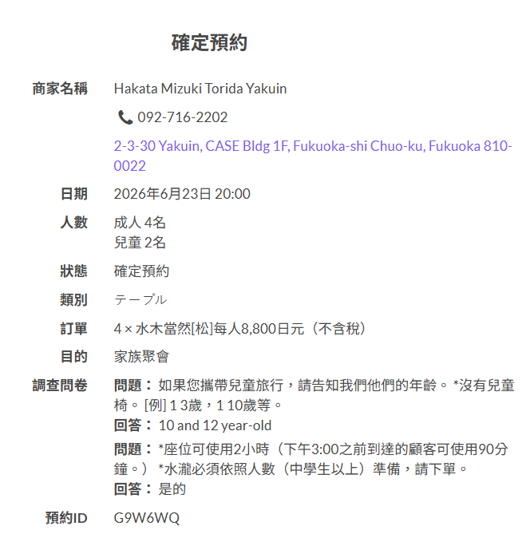
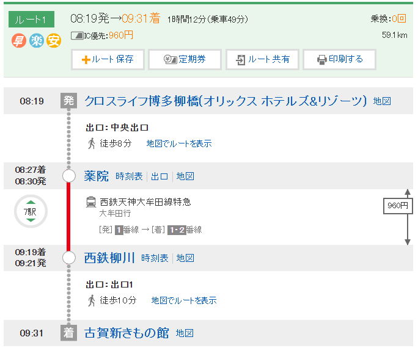
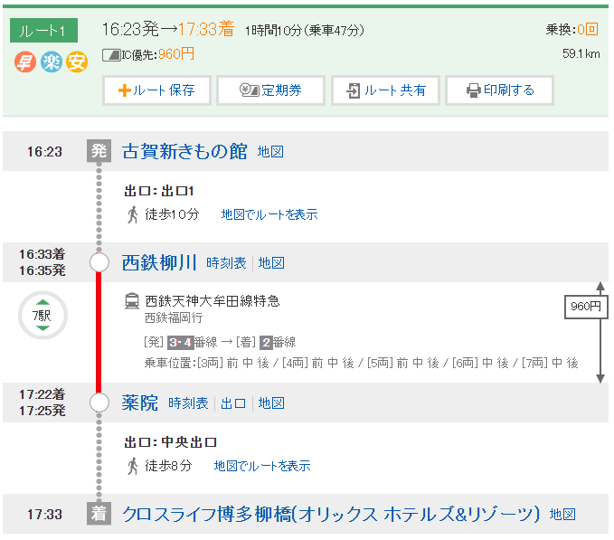
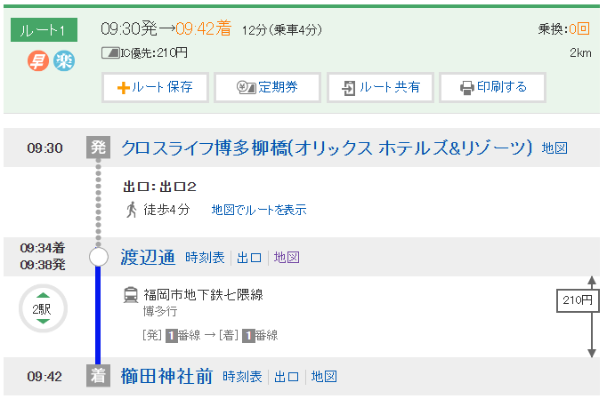

📋 行程總覽
Day 1
6/21（日）
✈️ 出發抵達福岡
自由行
Day 2
6/22（一）
🚌 太宰府・由布院
🔒 固定包車
Day 3
6/23（二）
🌋 阿蘇・熊本城
🔒 固定包車
Day 4
6/24（三）
🛶 柳川川下り遊船
全員聚餐 🍲
Day 5
6/25（四）
⛩️ 櫛田神社 → 🐬 海洋世界 → 返台
✈️ BR101 19:20起飛
👥 成員：4位大人 + 2位國小孩童
🏨 住宿：Cross Life 博多柳橋（渡邊通站旁，博多・天神之間）
💡 原則：長輩友善、孩童安全，景點以平坦動線、室內冷氣為優先
🌤️ 各日天氣預報
📅 預報更新：2026/6/18。6月下旬為梅雨季，天氣變化大，請以出發前最新預報為準，全程建議帶傘。
6/21（日）
福岡市
☀️ 晴
🌡️ 27°/20° ☔ 0%
6/22（一）
由布院・別府
🌧️ 陰時有雨
🌡️ 由布院23°/18°・別府28°/21° ☔ 60–70%
6/23（二）
阿蘇・熊本
🌧️ 雨（山區涼）
🌡️ 阿蘇22°/16° ☔ 80%
6/24（三）
柳川・福岡
🌦️ 多雲短暫雨
🌡️ 28°/19° ☔ 60%
6/25（四）
福岡市
☀️ 晴
🌡️ 29°/20° ☔ 0%
💡 行前必知
☔
6月梅雨季必備雨具
六月下旬為日本梅雨季，氣候悶熱潮濕，務必攜帶折疊傘。建議穿著透氣快乾衣物，備薄外套應對室內冷氣。
💴
現金不可少
柳橋市場、神社、郊區小店、屋台路邊攤以現金交易為主。建議每人準備 ¥15,000-20,000 現金。
📱
網路建議
九州郊區（阿蘇、由布院山區）訊號偶爾偏弱，建議購買 Softbank 或 Docomo 的 SIM/eSIM，訊號較穩定。
🌋
阿蘇火山口開放不確定
阿蘇中岳火口能否靠近視當天火山氣體濃度而定，包車司機會於出發當天早上確認最新管制狀況。
♿
長輩友善貼心提醒
太宰府石板路不平，建議穿防滑鞋。由布院部分路段有坡道。熊本城入城有電梯。Day4 柳川以坐船遊覽為主，步行段平緩；6/24 降雨機率高，請備雨具與防滑鞋。
🍲
Day4 聚餐務必提前預訂
晚間聚餐為「燒肉壽喜燒 純 天神警固店」黑毛和牛壽喜燒套餐（附飲料暢飲），請提前1-2週預訂6人座位。
💳
柳川交通：松月免費接駁巴士
Day4 往返松月乗船場改搭松月「免費接駁巴士」（去程站內2F案內所、回程自元城町觀光駐車場，午後約每30分一班）；接不上時備案西鐵巴士或計程車。詳見 Day4 頁面。
Day 2 🚌 太宰府・由布院・別府
6月22日（週一）
🔒 固定包車一日遊
🔒 本日為固定行程，不可更動。
包車全天：太宰府天滿宮 → 由布院（金鱗湖散策） → 別府纜車（備案）→ 返福岡
🌅
07:00 – 08:00
飯店早餐
飽餐一頓，準備全天長途行程。
🚌
08:00 準時出發
包車出發（飯店大廳）
請務必準時集合，避免壓縮景點停留時間。
🔒 固定時間
⛩️
08:45 – 10:15
太宰府天滿宮（1.5小時）
祭祀學問之神菅原道真，日本知名神社。必走太鼓橋，必看御神牛，必吃梅枝餅！
🍡 梅枝餅 必吃
📸 星巴克表參道打卡
♿ 參道平坦好走
🚌
10:15 – 12:15
車程（約2小時）→ 由布院
長輩可在車上休息補充體力，欣賞九州丘陵山景。
♿ 車上充分休息
🏡
12:15 – 15:15
由布院・湯布院漫遊（3小時含午餐）
散策：車站 → 湯之坪街道（特色甜點・史努比茶屋）→ 湯布院花卉村（童話歐洲風）→ 金鱗湖（夢幻湖景）
🥩 豐後牛釜飯 午餐
🎂 B-speak 生乳捲
🧀 Milch 半熟起司
📸 金鱗湖打卡
🚡
15:15 – 17:30（備案選項）
別府纜車（視體力決定）
搭纜車眺望別府灣絕景。若長輩體力不足，可在由布院多待一會兒，直接返程，彈性調整。
📸 別府灣山頂絕景
⚠️ 視長輩體力決定
🏨
17:30 – 19:30
返回福岡飯店
長途返程，在車上休息，回飯店稍作梳洗。
♿ 車上休息
🍲
20:00 晚餐
博多シーフードうお田（Uoden）
全員晚餐：博多人氣海鮮居酒屋，主打玄界灘新鮮海產、生魚片與爐端燒。飯店搭地鐵七隈線（渡邊通 → 天神南，¥210，可刷 SUGOCA）約19分即達，亦可搭計程車。
🐟 玄界灘海鮮🚇 七隈線 ¥210⚠️ 建議提前預訂
🚆 晚餐乘換案內（飯店 → うお田）
飯店 → 博多シーフード うお田
19:32 → 19:51 ｜ 七隈線 ｜ ¥210（可刷 SUGOCA）

🗺️ 今日景點
🚗 交通資訊
🚌 全日包車，無需自行安排交通
📏 福岡 → 太宰府 約45分 ｜ 太宰府 → 由布院 約1.5-2小時
📏 由布院 → 別府 約30分 ｜ 別府 → 福岡 約1.5小時
Day 3 🌋 壯觀阿蘇・熊本城
6月23日（週二）
🔒 固定包車一日遊
🔒 本日為固定行程，不可更動。
包車全天：大觀峰 → 草千里 → 阿蘇中岳火口 → 熊本城 → 城彩苑 → 返福岡
🌅
07:00 – 08:00
飯店早餐
今天行程最長，務必吃飽。
🚌
08:00 準時出發
包車出發（飯店大廳）
前往阿蘇，車程約2.5小時，可在車上補眠。
🔒 固定時間
🏔️
10:30 – 13:30
阿蘇火山區域（3小時含午餐）
①大觀峰：俯瞰世界最大破火山口，史詩壯觀。
②草千里：無盡大草原＋馬兒悠遊，極為療癒。
③中岳火口：視當天氣體濃度開放，翡翠綠火口湖。
🐄 阿蘇赤牛丼 必吃
📸 大觀峰絕景
♿ 大觀峰有觀景台
⚠️ 火口視當天氣象
🚌
13:30 – 15:00
車程移動（前往熊本）
約1.5小時，在車上休息補充體力。
🏯
15:00 – 17:00
熊本城 & 城彩苑（2小時）
日本三大名城！震後修復的雄壯天守閣令人震撼。城彩苑重現江戶氛圍，熊本名產＋熊本熊周邊這裡最齊全。
📸 熊本城天守閣
🛍️ 芥末蓮藕・紅豆番薯糰子
♿ 入城有電梯
⚠️ 最後入場16:30
🏨
17:00 – 19:00（含塞車）
返回福岡飯店
傍晚容易塞車。兩天包車圓滿結束！回飯店稍作休息梳洗。
♿ 回飯店休息
🍲
20:00 晚餐
博多水炊き とり田 薬院店
全員晚餐：博多名物「水炊き」（雞白湯鍋）名店。已預約：水炊き「松」¥8,800／人，4大2小，預約ID G9W6WQ。飯店搭地鐵七隈線（渡邊通 → 薬院大通，¥210，可刷 SUGOCA）約19分即達。
🍲 水炊き「松」🚇 七隈線 ¥210✅ 已預約 G9W6WQ
🚆 晚餐乘換案內（飯店 → とり田）
飯店 → 博多水炊き とり田 薬院店
19:03 → 19:22 ｜ 七隈線 ｜ ¥210（可刷 SUGOCA）

✅ とり田 薬院店・預約確認
6/23 20:00 ｜ 4大2小 ｜ 水炊き「松」¥8,800/人 ｜ ID G9W6WQ

🗺️ 今日景點
🍽️ 今日美食
🐄
阿蘇赤牛丼
阿蘇名物，鮮嫩多汁的赤牛肉鋪滿熱飯，在阿蘇必吃！
🪷
熊本・芥末蓮藕
熊本最具代表性鄉土料理，蓮藕填入芥末味噌，口感獨特。
🟣
いきなり団子（紅豆番薯糰子）
熊本傳統甜點，外皮Q軟包裹番薯和紅豆，城彩苑內多店有賣。
Day 4 🛶 柳川川下り遊船
6月24日（週三）
🛶 川下り遊船 + 🍱 鰻魚飯 + 🍲 全員聚餐
☔ 雨天調整（6/24 降雨機率高）：取消和服體驗，今日以有頂篷的「川下り遊船」為主，並提前至 10:00 上船；午餐於沖端「民藝茶屋六騎」分兩批入座（12:00／12:30）。
🚐 回程：搭松月免費接駁巴士自沖端返「西鐵柳川駅」（午後約每 30 分一班，班次當天再確認）。
🥐
07:30 – 08:10
飯店早餐・出發前準備
用過早餐後整裝出發，今日往南前往柳川，車程約1小時。雨天請備雨具與防滑鞋。
♿ 從容出發不趕☔ 雨天備案
🚆
08:19 出發
飯店 → 薬院站 → 西鐵柳川
08:19 飯店出發，步行約8分至「薬院站」 → 搭西鐵天神大牟田線「特急」（大牟田行）→ 09:19 抵「西鐵柳川站」 → 於站內 2F「松月案內所」轉搭松月免費接駁巴士前往松月乗船場。
🚆 西鐵特急 ¥960🚐 免費接駁
🛶
10:00 上船
松月乘船場・柳川川下り遊船
登「どんこ舟」沿護城河緩緩順流而下至沖端，約60–70分，船夫撐篙吟唱，兩岸柳樹與白壁古宅相映。船有頂篷，小雨亦可成行（建議備雨具、暖暖包）。地址：柳川市三橋町高畑329。
🛶 川下り遊船♿ 平穩坐船賞景☔ 有頂篷遮雨
🍱
12:00
民藝茶屋六騎・鰻魚飯（第一批・2人）
柳川名物「うなぎのせいろ蒸し」（鰻魚蒸籠飯）！昭和46年創業老舖，位於沖端水鄉區，船程終點步行可達。已訂位 2 位。地址：柳川市沖端町28。
🍱 柳川鰻魚蒸籠飯
✅ 訂位 2人
🍱
12:30
民藝茶屋六騎・鰻魚飯（第二批・4人）
同店第二批入座，已訂位 4 位（6 人分兩時段，方便分批用餐）。
🍱 鰻魚蒸籠飯
✅ 訂位 4人
🚐
餐後 約14:00–15:00
松月免費接駁巴士・返回西鐵柳川駅
餐後步行至「元城町觀光駐車場」搭松月免費接駁巴士回「西鐵柳川駅」，午後約 14:00／14:30／15:00／15:30／16:00／16:30 發車。
⚠️ 班次與末班時間請當天再確認；接不上可改搭西鐵巴士或計程車（約10分）至西鐵柳川駅。
🚐 免費接駁
⚠️ 班次當天確認
🚆
返程
西鐵柳川 → 薬院 → 飯店
於「西鐵柳川站」搭西鐵天神大牟田線「特急」（西鐵福岡行）→ 約47分抵「薬院站」 → 步行約8分回到飯店稍作休息。
🚆 西鐵特急 ¥960
🍲
19:00
🎉 全員聚餐・燒肉壽喜燒 純 天神警固店
JA全農直營，主打九州產黑毛和牛！黑毛和牛壽喜燒套餐 ＋ 酒水飲料無限暢飲。地址：福岡市中央區警固1-6-56 サウスガーデンビル1F（薬院大通站步行6分／天神步行8分）。
🍲 黑毛和牛壽喜燒
🍻 飲料暢飲
⚠️ 建議提前預訂
🚆 乘換案內圖（點圖可放大）
① 去程 飯店 → 西鐵柳川（轉松月接駁）
08:19 → 09:19 ｜ 西鐵特急 ｜ ¥960

＊抵西鐵柳川後於站內2F松月案內所搭免費接駁巴士前往松月乗船場。
② 返程 西鐵柳川 → 薬院 → 飯店
西鐵特急 ｜ ¥960

＊先搭松月免費接駁巴士自沖端回西鐵柳川駅，再轉西鐵特急。
🗺️ 今日景點
🚆 Day4 交通建議
🚆 飯店（薬院站）→ 西鐵柳川：西鐵天神大牟田線「特急」約47分（¥960）｜可刷 SUGOCA
🚐 西鐵柳川駅 ↔ 松月乗船場／沖端：松月免費接駁巴士（去程站內2F案內所；回程自元城町觀光駐車場，午後約每30分一班）
🚌 備案（接駁接不上時）：西鐵巴士或計程車（約10分）至西鐵柳川駅
💳 交通卡（SUGOCA）儲值試算
✅ 西鐵電車與西鐵巴士皆可使用 SUGOCA（Suica、icoca、nimoca 等全國 IC 卡通用）。今日柳川往返乗船場以松月免費接駁巴士為主，IC 卡主要用於西鐵特急。
🚆 Day4 去程 薬院 → 西鐵柳川（特急）：¥960
🚐 Day4 柳川往返乗船場（松月免費接駁巴士）：¥0
🚆 Day4 返程 西鐵柳川 → 薬院（特急）：¥960
🚇 Day5 飯店 → 櫛田神社（七隈線）：¥210（海之中道、機場為計程車，IC ¥0）
💴 合計（每位大人）：¥2,130 → 建議每張卡儲值 ¥3,000（含緩衝＋超商小額消費）
＊每日晚餐往返（七隈線 ¥210/趟）若也刷卡，請再多備餘額。
👦 國小孩童兒童票（約半價）：Day4 約 ¥960／位，建議儲值 ¥1,500
Day 5 🏠 最後衝刺，返台
6月25日（週四）
✈️ BR101 19:20 起飛
⏰ 17:00 機場集合！上午逛櫛田神社與川端商店街，中午前往海洋世界海之中道，下午回飯店領行李後直奔機場。請預留叫車與塞車時間。
🍳
08:00 – 09:00
飯店早餐 & 退房
享用早餐並辦理退房手續。
🧳
09:00
行李寄放飯店櫃檯
將行李寄放在飯店前台（通常免費，下午回來再領），輕裝出遊。
♿ 輕裝出門
⛩️
10:00 – 12:00
櫛田神社 ＋ 川端通商店街
博多總鎮守「櫛田神社」，供奉博多祇園山笠的大型飾山笠，氣勢非凡；緊鄰的「川端通商店街」是福岡最古老的拱頂商店街，可採買伴手禮、品嚐川端善哉等在地小吃。
📸 飾山笠
🎁 商店街採買伴手禮
♿ 商店街有頂棚平坦好走
🚖
12:00 – 12:30
計程車前往海之中道
搭計程車前往「海洋世界海之中道」，約20-30分鐘。
🚖 計程車約20-30分
🐬
12:30 – 15:00
海洋世界海之中道（マリンワールド海の中道）
九州具代表性的水族館，臨博多灣，展示玄界灘生態。海豚與海獅表演、巨大水槽群與企鵝，孩童最愛，室內為主、不受天氣影響。
🐬 海豚秀
♿ 室內動線平坦
🍽️ 館內可用午餐
🧳
15:00 – 15:30
計程車回飯店領行李
搭計程車返回「Cross Life 博多柳橋」，向櫃檯領回寄放的行李，確認物品齊全。
🚖 計程車回飯店
🚖
16:30 – 17:00
前往福岡機場（國際線）
搭計程車或 Uber 前往機場，飯店到國際航廈約20分鐘。請預留叫車與塞車時間。
🚖 計程車 約¥2,000
⚠️ 預留塞車時間
🛫
17:00 機場集合
福岡機場國際線 出境
全員於國際線出境大廳集合（BR101 起飛前2小時20分），辦理登機＋托運行李。機場免稅店不大，但菸酒、化妝品、全國性伴手禮（白色戀人、薯條三兄弟等）都有。
✅ 全員17:00機場集合
✈️
19:20 – 20:45
長榮航空 BR101 返回台北
飛行約1小時25分。抵台北桃園後，機場接駁車接送至診所下車，旅程結束！
🏠 21:30~ 診所接送
🚆 上午乘換案內（飯店 → 櫛田神社）
飯店 → 櫛田神社前
09:30 → 09:42 ｜ 七隈線 ｜ ¥210（可刷 SUGOCA）

🎁 必買伴手禮
🐟
明太子（辛子明太子）
福岡第一名產！「ふくや」「海千」「福砂屋」都是知名品牌，川端商店街與機場皆有販售。
🥐
博多通饅頭 / 二〇加煎餅
福岡代表性和菓子伴手禮，精美包裝，適合送禮。
🍰
福砂屋蜂蜜蛋糕（Castella）
長崎蜂蜜蛋糕老舖，底部砂糖口感獨特，自用送禮皆宜。
🐻
熊本熊（Kumamon）周邊
熊本城彩苑最齊全！孩童必定瘋搶。機場也有販售。
🚕 計程車目的地
中文名 ・ 日文名 ・ 日文地址
📋 直接指給司機看
把這頁拿給計程車司機看，指出目的地的日文名稱與日文地址即可；點「📍 地圖」開啟 Google 地圖導航。
🏨 住宿
飯店
クロスライフ博多柳橋（オリックス ホテルズ＆リゾーツ）
福岡県福岡市中央区春吉3丁目12-1
📍 地圖
🍽️ 餐廳（福岡市內）
Day2 晚餐・海鮮居酒屋 うお田
博多シーフード うお田（西中洲店）
福岡県福岡市中央区西中洲4-17 であい橋ビル1F
※ うお田有多家分店，出發前請再確認預訂分店
📍 地圖
Day3 晚餐・水炊き（已預約 G9W6WQ）
博多水炊き とり田 薬院店
福岡県福岡市中央区薬院2-3-30 CASE薬院ビル1F
📍 地圖
Day4 晚餐・全員聚餐（黑毛和牛壽喜燒）
焼肉・すき焼き 純 天神警固店
福岡県福岡市中央区警固1-6-56 サウスガーデンビル1F
📍 地圖
🛶 柳川（Day4）
川下り遊船・上船處
柳川観光開発 松月乗船場
福岡県柳川市三橋町高畑329
📍 地圖
Day4 午餐・柳川鰻魚飯
民芸茶屋 六騎
福岡県柳川市沖端町28
📍 地圖
⛩️ 福岡市內・近郊（Day5）
博多總鎮守
櫛田神社
福岡県福岡市博多区上川端町1-41
📍 地圖
商店街
川端通商店街（上川端商店街）
福岡県福岡市博多区上川端町
📍 地圖
水族館
マリンワールド海の中道
福岡県福岡市東区西戸崎18-28
📍 地圖
返台・搭機（國際線）
福岡空港 国際線旅客ターミナル
福岡県福岡市博多区大字青木739
📍 地圖
🚌 包車景點（Day2–3・備用）
Day2–3 為包車，原則上不需計程車；以下日文地址供臨時叫車或走散時備用。山區景點以「景點名稱」最易溝通。
學問之神
太宰府天満宮
福岡県太宰府市宰府4-7-1
📍 地圖
由布院
金鱗湖
大分県由布市湯布院町川上
📍 地圖
童話小村
湯布院フローラルビレッジ
大分県由布市湯布院町川上1503-3
📍 地圖
阿蘇外輪山展望
大観峰
熊本県阿蘇市山田（大観峰）
📍 地圖
阿蘇草原
草千里ヶ浜
熊本県阿蘇市草千里ヶ浜
📍 地圖
活火山火口
阿蘇中岳火口（阿蘇山上）
熊本県阿蘇市黒川（阿蘇山）
📍 地圖
日本三大名城
熊本城
熊本県熊本市中央区本丸1-1
📍 地圖
熊本城旁商店街
桜の馬場 城彩苑
熊本県熊本市中央区二の丸1-1
📍 地圖